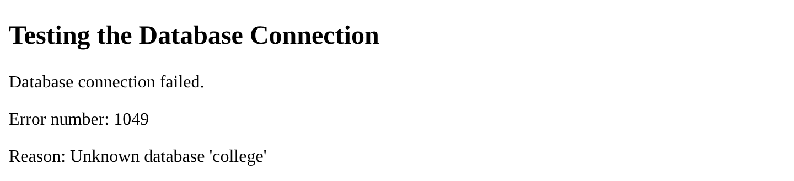

Write a PHP code to connect to a MySQL database.
Program 8.1: Connecting PHP to MySQL
Concepts used
Connection parameters, mysqli_report(), mysqli_connect(), mysqli_connect_errno(), mysqli_connect_error(), mysqli_get_server_info(), mysqli_close().
Test data: Host localhost; username root; empty password; database college_db. For the second test, the database name is changed to college, which does not exist.
Logic
- Switch MySQLi error reporting to the return-value mode.
- Store the four connection details in variables.
- Call
mysqli_connect(). - If the result is false, display a simple message and the error number.
- Otherwise, display a success message and the server version, and close the connection.
- The database college_db must exist before the first test. If it has not yet been created, run Program 8.2 of Section 8.4 first, or create it in phpMyAdmin through the Databases tab.
Code
<?phpmysqli_report(MYSQLI_REPORT_OFF); // functions return false on failure $host = "localhost";$username = "root";$password = ""; // XAMPP default: no password for root$database = "college_db"; $conn = mysqli_connect($host, $username, $password, $database);?><!DOCTYPE html><html lang="en"><head> <meta charset="UTF-8"> <title>MySQL Connection</title></head><body> <h2>Testing the Database Connection</h2> <?php if ($conn === false) { echo "<p>Database connection failed.</p>"; echo "<p>Error number: " . mysqli_connect_errno() . "</p>"; echo "<p>Reason: " . htmlspecialchars(mysqli_connect_error()) . "</p>"; } else { echo "<p>Database connection successful.</p>"; echo "<p>Connected to database: $database</p>"; echo "<p>Server version: " . mysqli_get_server_info($conn) . "</p>"; mysqli_close($conn); echo "<p>The connection has been closed.</p>"; } ?></body></html>
Output
These are real screenshots, taken by running the program with the test data.

Understanding the output
The first output confirms that the four details were correct and that a link to the server was opened and then closed. The server version shown depends on the installed XAMPP or WampServer, so it is a sample value. The second output shows how a failure is detected: mysqli_connect() returned false, and the error number 1049 and its message explain the cause. The warning at the top is displayed by PHP itself on a development computer; on a public website, error display is switched off and only the program's own message would appear. If MySQL has not been started in the Control Panel, the reason shown is that no connection could be made, and if the password is wrong, the error number is 1045 with an "Access denied" message.
How it works
Preparing and connecting: mysqli_report(MYSQLI_REPORT_OFF) makes MySQLi functions return false on failure instead of stopping the script. The four connection details are stored in variables, so that they are easy to read and change, and are passed to mysqli_connect() in the order host, username, password, database. The returned value is stored in $conn.
Checking the result: The comparison $conn === false detects a failed connection. In that case, the program displays the error number and the reason, encoding the reason with htmlspecialchars() because it may contain quotation marks. Otherwise, it displays a success message, the database name and the version of the server, obtained with mysqli_get_server_info(), and then closes the connection.
Run it yourself
college_db database (see Setup).Running it in XAMPP
Start Apache and MySQL in the XAMPP Control Panel, save the file in C:\xampp\htdocs\phpbook\ch08, and open http://localhost/phpbook/ch08/connect.php. For the second test, change $database to "college", save and reload the page, and then restore "college_db".
Common mistakes
- Forgetting to start MySQL in the XAMPP Control Panel; Apache alone is not enough for database programs.
- Using an old
mysql_connect()example, which stops PHP 8 with Call to undefined functionmysql_connect(). - Giving the arguments in the wrong order, such as the database name before the password.
- Typing a password for root in XAMPP when none has been set, which gives error 1045.
- Displaying the connection details, especially the password, in the page for checking purposes.
Viva questions
Which function connects PHP to MySQL?
mysqli_connect(host, username, password, database).